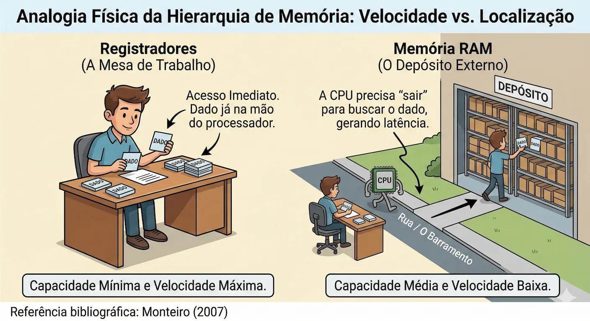
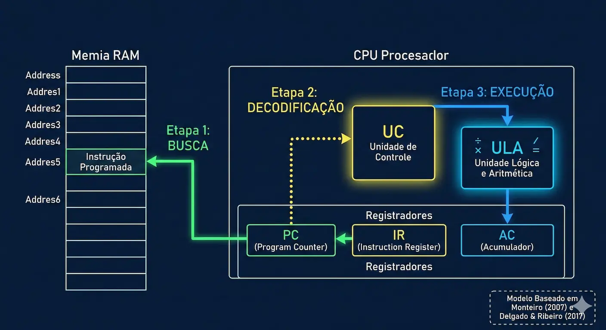

← Voltar ao Portal da Disciplina
Conheça meu trabalho como perito
← Voltar ao Portal da Disciplina
Conheça meu trabalho como perito
← Voltar ao Portal da Disciplina
Conheça meu trabalho como perito
← Voltar ao Portal da Disciplina
Conheça meu trabalho como peritoSistemas Computacionais e Segurança | 05 de Março de 2026
📚 Base Teórica: Esta agenda segue a estruturação de Monteiro (2007), partindo da álgebra abstrata até a implementação física das portas lógicas que sustentam a arquitetura da CPU.
Inverte o estado lógico. Essencial para sinais de controle e "flags" de erro.
Saída 1 apenas se TODAS as entradas forem 1. Lógica de "permissão".
Saída 1 se PELO MENOS UMA entrada for 1. Lógica de "alarme".
📚 Base Monteiro (2007): "Qualquer circuito digital complexo pode ser decomposto nessas três funções básicas."
Para o Analista de Sistemas, o hardware e o SO não são apenas componentes físicos; são os alicerces da eficiência e da integridade.
A arquitetura define o limite da segurança e a velocidade real de processamento.
"O processador (ou CPU) é o elemento central do sistema, mas sua eficiência é ditada pela capacidade de troca de dados com a memória e a organização dos barramentos."
— MONTEIRO, Mario A. (2007)
Conforme Delgado & Ribeiro (2017), a compreensão profunda da interação CPU-Memória permite ao gestor de TI prever e mitigar gargalos operacionais antes que impactem o negócio.
"Compreender o hardware é a chave para auditar o software."
O "Cérebro" do sistema. Sua função é buscar instruções na memória, decodificá-las e orquestrar o fluxo de dados entre os componentes.
"Garante o sequenciamento correto das operações lógicas."
O "Braço Executivo". Realiza as operações matemáticas e testes lógicos. É onde os dados são efetivamente transformados.
"Responsável pela execução bruta de cálculos binários."
Delgado & Ribeiro (2017): A performance máxima depende da perfeita sincronia entre a UC e a ULA no caminho de dados.
Monteiro (2007): A arquitetura interna define a capacidade de resposta do sistema frente a instruções complexas.
💡 Insight do Analista: Em auditoria de segurança, anomalias na carga de trabalho da UC podem indicar tentativas de exploração de falhas de hardware (como ataques de canal lateral), onde o fluxo de instruções é manipulado.
São as unidades de armazenamento localizadas no interior do processador. Diferente da RAM, eles operam na mesma velocidade dos circuitos da CPU, armazenando os operandos e resultados imediatos das instruções em execução.
Existem registradores com funções vitais para o fluxo do sistema:
Monteiro (2007): Os registradores constituem a memória de rascunho da CPU, possuindo a menor capacidade e o menor tempo de acesso da hierarquia.
Delgado & Ribeiro (2017): O número e a largura (bits) dos registradores definem a arquitetura do processador (ex: x64) e sua capacidade de processamento paralelo interno.
Em uma análise de performance, o esgotamento de registradores força o processador a mover dados para a cache ou RAM, gerando latência. Em perícia forense, a análise de registradores (através de core dumps) permite reconstruir o estado exato de um sistema no momento de uma falha ou ataque, revelando endereços de memória manipulados por malwares.
Para entender a performance, precisamos converter ciclos de clock em escalas humanas:
Velocidade: 1 Ciclo de Clock.
Analogia Humana: É como ter o dado impresso na palma da sua mão. Você não precisa se deslocar para ler.
Velocidade: ~200 a 500 Ciclos de Clock.
Analogia Humana: É como ter que sair do prédio e ir até à biblioteca na outra rua para consultar uma informação.
🔍 Insight para o Analista: Esta diferença brutal de velocidade é o que justifica a existência das memórias Cache. Elas tentam diminuir este abismo, funcionando como uma "mesa de trabalho" entre a mão (Registrador) e a biblioteca (RAM).

Figura 1: Analogia Física da Hierarquia de Memória. Fonte: Adaptado de Monteiro (2007).
Insight de Engenharia: Conforme Delgado & Ribeiro (2017), a distância física entre os componentes impõe limites de tempo devido à propagação de sinais elétricos.
Insight de Segurança: Quanto mais longe o dado está do Core (Mesa), mais interfaces e barramentos ele atravessa, aumentando a superfície de interceptação.
A Unidade de Controle (UC) busca a instrução armazenada na memória RAM, utilizando o endereço contido no registrador PC (Program Counter).
Memória -> Registrador de Instrução (IR)
A UC interpreta o código da instrução para determinar qual operação deve ser realizada e quais dados (operandos) serão necessários para a tarefa.
Tradução do OpCode
A Unidade Lógica e Aritmética (ULA) realiza a operação sobre os dados. O resultado pode ser armazenado em um registrador ou enviado de volta à memória.
Processamento Real (ULA)
Monteiro (2007): O ciclo básico de execução de uma instrução é o processo pelo qual um computador lê uma instrução de máquina, interpreta-a e a executa.
Delgado & Ribeiro (2017): A eficiência do ciclo de instrução pode ser otimizada através de técnicas como o pipelining, permitindo que várias instruções estejam em diferentes estágios do ciclo simultaneamente.
Em termos de segurança, muitos ataques de buffer overflow tentam corromper o passo de Fetch, alterando o valor do registrador PC para que ele busque um código malicioso em vez da próxima instrução legítima do programa.

Figura 2: Ciclo de Instrução (Fetch, Decode, Execute). Fonte: Baseado em Monteiro (2007) e Delgado & Ribeiro (2017).
O Clock é o sinal de sincronização que define o ritmo exato em que as operações do Ciclo de Instrução ocorrem.
Medido em Hertz (Hz), indica quantos ciclos o processador realiza por segundo. Atualmente, operamos na casa dos Gigahertz (GHz) — bilhões de pulsos por segundo.
"Cada pulso de clock representa uma oportunidade para a Unidade de Controle avançar um passo no ciclo de execução." — Monteiro (2007)
Delgado & Ribeiro (2017) ressaltam que o desempenho não depende apenas da frequência alta, mas do número de instruções que o processador consegue completar em cada ciclo (IPC).
Aproveite para discutir: como a velocidade do Clock impacta a percepção de fluidez nos sistemas que vocês analisam no dia a dia?
Segundo Monteiro (2007), a sincronização é vital. Para nós, a pausa consolida os conceitos de Fetch e Decode antes de entrarmos no abismo da latência.
Tempo Restante
Enquanto as CPUs evoluíram exponencialmente em velocidade, as memórias RAM não acompanharam o mesmo ritmo, criando um gargalo histórico.
Quando o processador solicita um dado e a memória demora a responder, a CPU entra em ociosidade forçada.
"O desequilíbrio entre a velocidade da CPU e o tempo de acesso à memória principal é o principal limitador do desempenho real dos sistemas." — Delgado & Ribeiro (2017)
Monteiro (2007) explica que o tempo de acesso à memória é o intervalo entre o pedido de leitura e a efetiva entrega do dado no barramento, um hiato que a arquitetura tenta mitigar via Hierarquia.
Localizada dentro do núcleo. É a menor e mais rápida. Dividida entre instruções e dados para evitar conflitos de acesso.
Intermediária. Geralmente dedicada a cada núcleo, mas com maior capacidade que a L1 para reduzir falhas de busca (misses).
Compartilhada entre todos os núcleos. Serve como um reservatório comum antes de recorrer à memória externa (RAM).
Memória principal externa. Grande capacidade, porém com latência "abismal" comparada ao clock do processador.
Delgado & Ribeiro (2017) explicam que a eficiência desta hierarquia baseia-se na Localidade Temporal (dados acessados recentemente serão usados logo) e Espacial (dados vizinhos serão acessados em sequência).
Para Monteiro (2007), a memória cache atua como uma interface de alta velocidade, cujo objetivo é fazer com que a velocidade da memória principal pareça aproximar-se da velocidade do processador.
Utilize os comandos do SO para identificar a topologia de memória e processamento da sua estação de trabalho.
Ctrl + Shift + Esc
Aba Desempenho > CPU
📚 Fundamentação: Segundo Monteiro (2007), a organização do sistema permite que o software de supervisão (S.O.) gerencie e exponha as estatísticas de uso de registradores e caches, permitindo ao analista monitorar a eficiência do throughput do sistema.
Se a energia cai, a evidência desaparece. Por que a volatilidade da RAM e dos Registradores é o maior desafio do Perito Moderno?
Monteiro (2007): Reforça que a natureza semicondutora das memórias RAM e Caches exige alimentação constante para manutenção dos estados lógicos (bits).
Delgado & Ribeiro (2017): Discutem como a arquitetura do processador protege (ou expõe) áreas de memória através de privilégios de execução.
"Dados em Repouso (HD) vs.
Dados em Movimento (CPU/RAM)"
A performance de um computador não é ditada apenas pela velocidade bruta da CPU, mas pela eficiência da hierarquia de memória em mitigar a latência.
"A organização de um computador moderno é um delicado equilíbrio entre o caminho de dados e a unidade de controle, onde a memória cache tenta mascarar as limitações físicas da RAM."
— Adaptado de MONTEIRO (2007)
Como reforçam Delgado & Ribeiro (2017), o domínio destes conceitos permite que o Analista projete softwares que respeitem os limites do hardware, evitando o desperdício de ciclos de clock e vulnerabilidades de memória.
🎯 Próximo Passo: Validação Prática em Laboratório
Com base nos conceitos de Monteiro (2007) e Delgado & Ribeiro (2017) vistos hoje, você sente segurança para realizar a auditoria da hierarquia de memória e identificar gargalos de clock?
Dr. Lincoln, acesse seu painel e monitore o engajamento da turma. Filtro sugerido:
Event Name = aprendizado_cpu
*Esta telemetria permite ajustar a "Carga de Processamento" da aula prática de amanhã (06/03).*
Seu feedback anônimo é o nosso KPI de Qualidade. Para Delgado & Ribeiro (2017), a otimização de um sistema só é possível através do monitoramento contínuo de seus outputs.
Módulo: Arquitetura de Processadores | Ref: 05/03/2026
"A eficiência do sistema é reflexo da harmonia entre hardware e instrução." — Monteiro (2007)
Aplicaremos o OS Introspection para validar a teoria em hardware real:
📚 Base Acadêmica: Como destacam Delgado & Ribeiro (2017), a performance percebida é o resultado direto da eficiência da comunicação interna. Para Monteiro (2007), o domínio dessa "sinfonia" entre CPU e memória é o que permite ao analista otimizar a infraestrutura de TI.